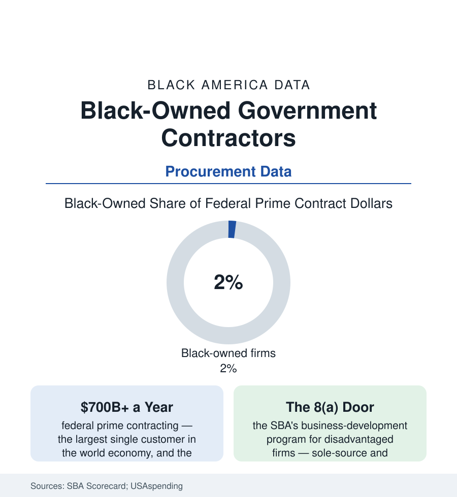

Black Business
Black-Owned Government Contractors: Selling to the Largest Buyer on Earth
The federal government spends over $700 billion a year with contractors; Black-owned firms receive a small single-digit share. The procurement data and the 8(a) file.

Every business in this section sells to somebody; the government contractors sell to the largest buyer in the world — over seven hundred billion dollars a year of federal prime contracts in the USAspending ledgers — and the share reaching Black-owned firms runs in the small single digits, roughly two percent of prime dollars in the SBA scorecard's recent years, against a small-business economy where Black firms are a tenth of the employer base. Procurement is the most quantified demand in American business — every dollar published — which makes its gap the section's most auditable one. This article reads the contracting file.
The Ladder: Subcontractor, Set-Aside, Prime
The industry's structure is a ladder the data let us price rung by rung: the subcontracting tier (the primes' small-business plans filing their percentages; Black firms' sub share running ahead of their prime share — the apprenticeship and the ceiling in one), the set-aside tier (the competitions fenced for small and disadvantaged firms — the HUBZone, women-owned, veteran, and 8(a) lanes, their award data public to the dollar), the 8(a) program itself (the SBA's nine-year development program for socially and economically disadvantaged owners — sole-source authority up to thresholds, mentor-protégé joint ventures, the graduation cliff at year nine that the program data track), and the open prime tier (the unrestricted competitions where the giants feed — the contract-bundling data's long concentration trend, the top hundred contractors' share of all dollars rising across the decades in the GAO's series, squeezing the tier below). The Black-owned sector's distribution across the ladder in the award data: dense at the sub and set-aside rungs, thinning steeply upward — with the named exceptions marking the ceiling's height (the IT, engineering, logistics, and facilities firms that crossed into the mid-market's hundreds of millions, several of them 8(a) graduates — the program's proof-of-concept shelf, cited by every side of the program's policy argument).
The Gates: Bonding, Clearances, and the Past-Performance Loop
The barrier literature in procurement is admirably specific: the bonding line (the construction file's surety gate in federal form — capacity priced off the same balance-sheet variables as the loan file), the facility-and-personnel clearance tiers (the cleared-workforce market's chicken-and-egg in the cleared firms' hiring data), the past-performance loop (the rating system that scores a firm on contracts it must already have won to be scored — the new-entrant's structural catch, the teaming and JV workarounds in the practice literature), the incumbency data (the recompete win-rates of sitting contractors in the analysts' figures — the bridge-contract economy), and the payment cycle (the federal prompt-payment rules against the primes' flow-down practices in the sub-tier's surveys). The legal frame around all of it has its own docket: the disparity studies (the hundreds of state and local studies in the record since Croson — the evidentiary genre this file's numbers come from), and the recent federal litigation over race-conscious program elements (the 8(a) program's presumption struck in the 2023 Ultima decision and the program's re-documentation since — the contracting file's live legal front, its award data now being written under the new rules).
The State and Local Tier, and the Corporate Cousin
Below the federal market runs the state-and-local procurement economy (the transit agencies, the school districts, the city halls of the cities section — their DBE and MBE program data the contracting file's second volume, the airport concessions' ACDBE program the retail file's procurement form) and beside it the corporate supplier-diversity economy (the Fortune supply chains' minority-spend reports — the Billion Dollar Roundtable's members' published tallies, the same firms appearing across both ledgers). The measurement debate runs through all three tiers in the same terms: the denominator fight (share of all dollars against share of available-and-able firms in the disparity methodology), the pass-through audits (the front-company findings that periodically convict the programs' abusers — enforcement data that cut both ways in the policy argument), and the graduation question the programs were built to answer (whether the sheltered tier produces firms that win in the open — the alumni data's mixed, improving, endlessly argued verdict). What no side disputes is the ledger's transparency: this is the one market in the business section where the customer's every check is public record, and the share can be read to the decimal every year.
Reading the Contracting Data
Two percent of the largest customer's dollars, a ladder measured rung by rung, and a rulebook being rewritten in the courts as the awards post: government contracting is the business file's clearest case that demand-side design — not supply-side exhortation — is where the numbers are decided. The buyer publishes its scorecard annually. The next edition is already accruing, one award at a time, in a database anyone can read.
More in Black Business
Black-Owned Businesses: Counts, Receipts, and the Representation Gap
About 161,000 Black-owned employer firms and three million solo ventures: how the Census Bureau counts Black business ownership, where firms concentrate, and the gap between population share and business share.
Black Median Net Worth: The Wealth Gap in Federal Reserve Data
The Federal Reserve puts Black median family net worth at $44,900, against $285,000 for White families — about 16 cents on the dollar. The widest gap in economic data.
Black Buying Power: The $1.8 Trillion Consumer Economy
Black buying power is estimated at about $1.8 trillion — larger than the economy of most nations. What the figure measures, who produces it, and what it buys.
Source: U.S. Small Business Administration scorecard and 8(a) program data; USAspending.gov; U.S. Census Bureau Annual Business Survey; Government Accountability Office reports.